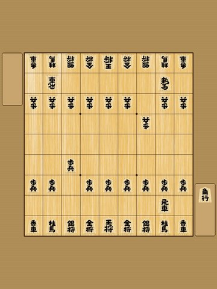

動画まるごと棋譜化 α版・訂正テスト
対局を撮った動画1本から、指し手つきの棋譜（KIF）を自動で復元します。 盤全体が映る位置にスマホを固定して撮影した動画をお使いください。
読み取りミスの手を指し直すと、以降の手も自動で直る 「訂正機能」を試験公開しています。できあがった棋譜の画面で、間違っている最初の手まで進めて 「この手が違う（訂正する）」を押してください。 通常版（β）は こちら。βで変換した直近の動画があれば、 下の「結果を確認する」からその結果を開いて訂正だけ試すこともできます。
ごめんなさい、うまく読み取れませんでした。
盤の四隅と駒台が画面に入っているか、明るさが十分かをご確認のうえ、もう一度お試しください。 何度も失敗する場合は、撮影環境（角度・照明・盤の種類）と一緒に @nkkuma_service へ教えてもらえると、次の改善につながります。
ⓘ スマホからアップロードする方へ
iPhoneでは動画を選んだあと、iOS側の準備（iCloudからの取得・形式変換）で数分かかることがあります。画面はそのままお待ちください。PCからのアップロードのほうがスムーズです。
対応: mp4 / mov、目安2GBまで。音声は処理後すみやかに削除されます。映像と棋譜は認識精度向上・学習のため保存されます（詳細：プライバシーポリシー）。対局相手など他の方が映る場合は同意を得てご利用ください。アップロードをもって上記に同意したものとみなします。
- 対局前：スマホスタンドを使って、盤全体と駒台が映る位置にスマホを固定します（スタンドがなければ、コップや本に立てかけても構いません）。

構図の例：盤の四隅と駒台がすべて画面に入るように - 対局中：撮りっぱなしにして、カメラは動かさないでください。1局まるごと1本の動画でOKです。
- 対局後：このページで動画を選んで「変換スタート」。動画の長さに応じて数分待つと、指し手と消費時間つきの棋譜（KIF）が表示されます。
- 盤の四隅が欠けずに映っていること。まわりに少し余白があるくらいがちょうどいいです
- 明るい場所で。強い逆光や、盤面へのライトの映り込みは認識ミスのもとになります
- 途中で撮影を止めたり、スマホの位置を変えたりしない
- 指したあと、手や腕を盤の上に置きっぱなしにしない（盤が見えている間に局面を読み取ります）
- 一手指すごとに、盤から手を引いて1〜2秒そのまま見せる意識で。極端な早指しは指し手を読み飛ばすことがあります（1手分の飛ばしは自動で補いますが、確実なのは映っている時間です）
うまくいかなかったときは、撮影環境（角度・照明・盤の種類）と一緒に @nkkuma_service まで教えてもらえると、精度改善の材料になります。
動画の長さにより数分かかることがあります。アップロード中はこのページを閉じないでください。 「局面を解析中…」に変わったら、変換はサーバー側で進むので、ページを閉じても大丈夫です。 あとでこのページを開き直すと、結果を確認できます。